日時
DATETIME · 日付欄と時刻欄で受け付ける日時入力欄
日時フィールドとは
- 1.1フィールドの追加と属性パネルの構成
1.1フィールドの追加と属性パネルの構成
概要
日時(DATETIME) は、日付と時刻を一緒に記録する入力欄です。検体採取日時 · 投与時刻 · 有害事象の発現時刻のように、何時何分かが重要な項目に使用します。入力欄が日付欄と時刻欄の二つに分かれていることが、日付タイプとの最大の違いです。1日単位で十分な場合は日付タイプを使用します。
画面説明
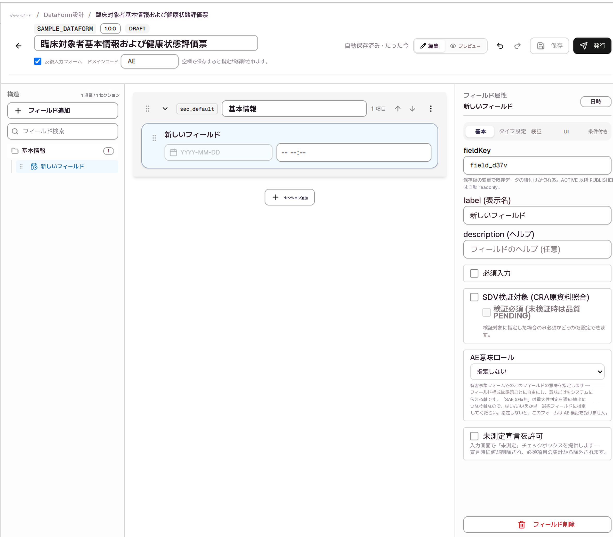
[+ フィールド追加] — ここでタイプを指定するとフィールドが作成されます。
構造ツリーに新しいフィールドが追加されます。
WYSIWYG キャンバスの日付欄 — YYYY-MM-DD の案内が表示されます。
時刻欄 — -- --:-- の案内が表示されます。二つの欄で一つのフィールドであり、値も一つとして保存されます。
fieldKey — 値が保存される実際のキーです。2.1
label (表示名) · description (ヘルプ) — 画面に表示される名前と補足説明です。2.1
必須入力 · SDV検証対象 · AE意味ロール · 未測定宣言を許可 — 2章で一つずつ説明します。
タイプバッジ「日時」 — 選択したフィールドのタイプです。追加した後は変更できません。
属性タブ 5種 — 基本 · タイプ設定 · 検証 · UI · 条件付き。このマニュアルの2~6章が各タブに対応します。
注意事項
必須確認 データ破損 · フォーム完了不可
- • 日付タイプにある「同意日前の入力禁止」は、このタイプにはありません。同意日ゲートが必要な項目であれば、日付タイプで設計するか、検証規則4章の値の範囲で下限を設けてください。
- • タイプは追加した後に変更できません。誤って選択した場合は、フィールドを削除して追加し直してください。日付にするか日時にするかは、時刻が分析に使われるかどうかで判断してください — 使わない時刻を受け付けると、記録者の負担が増えるだけです。
- • 発行(PUBLISH)後は構造を変更できません。運用中に修正が必要な場合は、新しいバージョンを発行してください。
基本タブ — 名前 · 必須 · 検証対象 · 未測定
- 2.1fieldKey · 表示名 · ヘルプ
- 2.2必須入力
- 2.3SDV検証対象 (CRA原資料照合)
- 2.4未測定宣言を許可
2.1fieldKey · 表示名 · ヘルプ
概要
フィールドの名前を決める領域です。保存キー(fieldKey)と画面に表示される名前(label)は別々の値であり、変更してよいタイミングが異なります。
画面説明
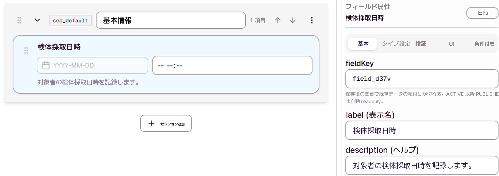
label (表示名) — 入力画面に表示する項目名を入力します。
キャンバスのフィールドタイトルとして表示されます。
description (ヘルプ) — 表示名の下に表示する補足説明を入力します。空欄にすると表示されません。
二つの入力欄の下にグレーの文字で表示されます。
fieldKey — 値が保存される実際のキーです。フィールドを追加すると field_d37v のように自動で付与され、英字 · 数字 · アンダースコアで変更できます。画面には表示されません — 下の注意事項を必ず確認してください。
注意事項
必須確認 データ破損 · フォーム完了不可
- • ⛔ 保存した後は fieldKey を変更しないでください。画面の案内のとおり「保存後の変更で既存データの紐付けが切れる」 — すでに入力された値が新しいキーと結び付かず、事実上失われます。
- • 「どの時点の時刻か」をヘルプに記載してください。「採取日時」が採取を開始した時刻か終えた時刻か、「投与時刻」が開始時刻か終了時刻かによって、記録者ごとに異なる値を入れることになります。時刻は日付より解釈の幅が広いため、より明確に記載する必要があります。
- • フォームが ACTIVE 以降 PUBLISHED 状態になると、fieldKey 入力欄は自動で読み取り専用になります。システムが変更を防ぐのはそれ以降なので、それまではユーザー自身が注意する必要があります。
誤解しやすい動作
- • 表示名はいつ変更しても安全です。保存キーではなく画面の文言だからです。
2.2必須入力
概要
この項目を必ず入力する必要があるかを決めます。選択すると、入力画面で日時を指定しなかった場合に保存がブロックされます。
画面説明
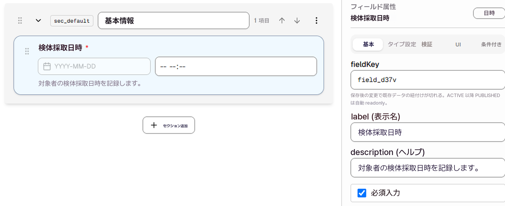
必須入力 — 選択すると、このフィールドが必須になります。
キャンバスの表示名の右に赤いアスタリスク(*)が表示され、ユーザーに必須であることを知らせます。
注意事項
必須確認 データ破損 · フォーム完了不可
- • ⛔ 時刻が分からないことが多い項目には慎重に設定してください。日付は覚えていても、何時だったかは分からないことがよくあります。時刻が分析に必ず必要な項目でなければ、日付タイプに変えたほうが記録の品質のためには適しています。どうしても必要な場合は、未測定宣言2.4を許可してください。
- • 二つの欄のうち一方だけを埋めても、値は完成しません。日付だけを選んで時刻を空けておくと日時が確定しないため、必須に指定した場合は二つの欄をすべて埋める必要があります。
- • 条件付き表示で非表示になったフィールドは、必須検証が免除されます。6章 一方、UIタブの非表示は除外されないため、混同しないでください。5.3
参考
- • 必須かどうかはフォーム完了の判定に使用されます。
2.3SDV検証対象 (CRA原資料照合)
概要
SDV(Source Data Verification) は、臨床開発モニター(CRA)が入力値を医療機関の原資料と照合する手順です。このフィールドをその対象に指定するかどうかを、ここで決めます。この設定はすべてのフィールドタイプで共通なので、画面もタイプに関係なく同じです。
画面説明
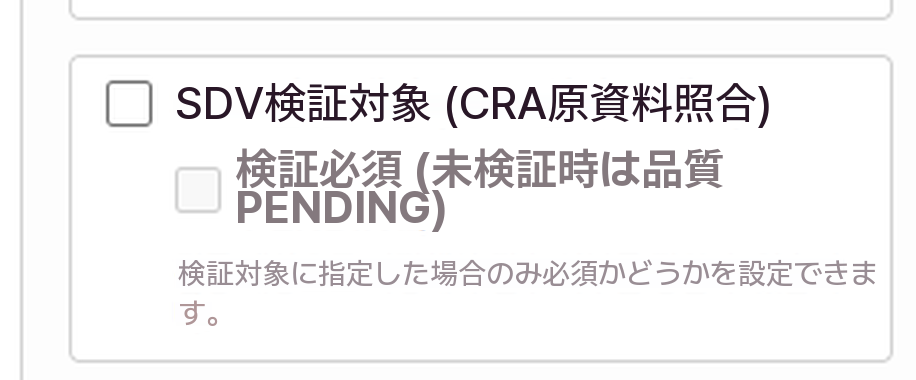

SDV検証対象 (CRA原資料照合) — 選択すると、このフィールドが CRA の照合リストに含まれます。
選択状態に変わると、下位項目が有効になります。
検証必須 (未検証時は品質 PENDING) — ①を選択した後でなければ指定できません。選択すると、CRA が照合を終えるまで、そのデータの品質ステータスが PENDING のままになります。
①を選択する前は、②が薄く表示されて無効です。画面の案内のとおり「検証対象に指定した場合のみ必須かどうかを設定できます。」
注意事項
必須確認 データ破損 · フォーム完了不可
- • 時刻が含まれる項目は、照合する原資料を事前に確認してください。日付はほとんどの記録に残りますが、時刻まで残る原資料は限られています (検体ラベル · 投与記録票など)。原資料に時刻がなければ、CRA が照合する根拠がありません。
- • 値が変更されると検証が解除されます。時刻を数分直しただけでも品質ステータスが PENDING に戻り、CRA が再度照合する必要があります。
誤解しやすい動作
- • SDV は入力した本人が実施することはできません。システムがクロス検証(Cross-User SoD)を強制するため、入力者と検証者は必ず別の人である必要があります。
参考
- • 品質ステータスは PENDING → VERIFIED → CLEAN の順に進みます。検証必須に指定したフィールドが一つでも未検証であれば、そのデータは CLEAN になりません。
2.4未測定宣言を許可
概要
日時を確認できない場合を値として区別して記録する機能です。空欄にしておくと、「まだ入力していない」と「確認したが時刻が分からない」を区別できません。この宣言がその二つを区別します。
画面説明

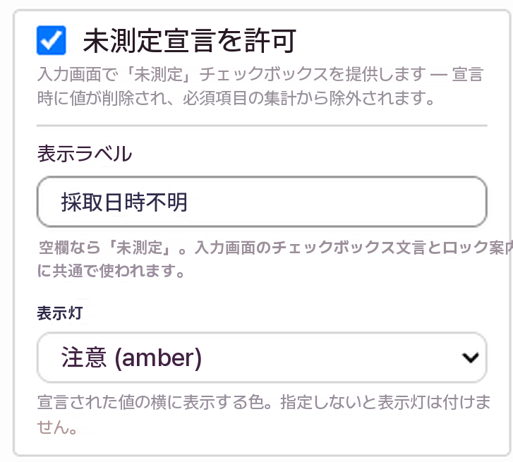
未測定宣言を許可 — 選択すると、入力画面に「未測定」チェックボックスが作成され、下の二つの項目が表示されます。
表示ラベル — 空欄にすると、デフォルト値「未測定」が適用されます。
採取日時不明 に変更すると、この文言が入力画面のチェックボックスとロック案内に一緒に適用されます。
表示灯 — デフォルト値はなしです。
注意(amber) に変更すると、宣言された値の横にその色の表示が現れます。
注意事項
必須確認 データ破損 · フォーム完了不可
- • ⛔ 分からない時刻を任意の時刻で埋めないでください。「00:00」や「12:00」で代わりに入れると、実際の記録と区別できず、分析で除外できません。深夜0時の記録が異常に多くなるデータは、たいていこれが原因で生じます。
- • 宣言すると値が削除されます。画面の案内のとおり — 「宣言時に値が削除され、必須項目の集計から除外されます。」
誤解しやすい動作
- • このタイプでは特に頻繁に使われることになります。日付は分かるのに時刻だけが分からない場合が多いのですが、二つの欄のうち一方だけを埋めることはできないため、結局は値全体が空になります。その場合に宣言として残すと、「記録していない」と区別されます。
参考
- • 表示灯を指定しないと、色の表示は適用されません。強調が必要な場合は、注意(amber) などを選択してください。
タイプ設定タブ — 表示形式と日時の範囲
- 3.1タイプ設定タブの全体構成
- 3.2表示形式 · 入力可能範囲 (format · min · max)
- 3.3デフォルト値 (defaultValue)
3.1全体構成
概要
日時をどの形式で表示し、どの区間まで受け付けるかを決めるタブです。日付タイプと項目の構成は同じですが、min · max がそれぞれ二つの欄(日付 · 時刻)に分かれています。
画面説明
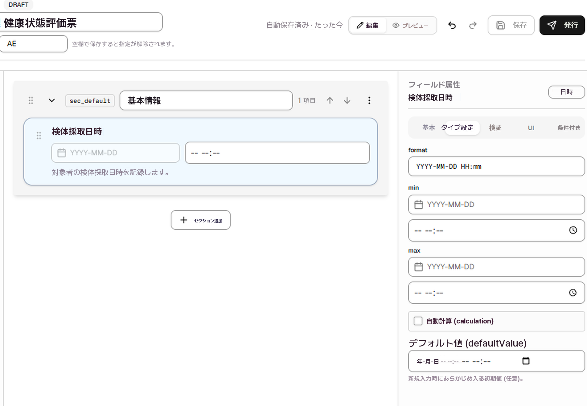
format — 日時を画面に表示する形式です。三つの中から選びます。3.2
min — 入力可能な最も早い日時です。日付欄と時刻欄にそれぞれ指定します。3.2
max — 入力可能な最も遅い日時です。こちらも二つの欄です。3.2
自動計算 (calculation) — 項目は表示されますが、このタイプでは使用しません。他のフィールドの値から数値を算出する機能なので、数値タイプで使用してください。
デフォルト値 (defaultValue) — 新規入力時にあらかじめ入れておく日時です。3.3
注意事項
必須確認 データ破損 · フォーム完了不可
- • min · max は「ブロック」の軸です。区間から外れた日時は保存されません。ただし、キャンバスには区間が表示されないため、ユーザーは保存の段階で初めてブロックの理由を知ることになります — helpText で事前に案内してください。5.4
- • この画面にはタイムゾーン(timezone)の設定がありません。複数の国の機関が参加する試験で時刻を比較する必要がある場合は、どのタイムゾーンを基準に記録するかをプロトコルと SOP で定め、helpText で案内してください。5.4
誤解しやすい動作
- • 入力欄に薄く表示される
YYYY-MM-DD·-- --:--は入力例であり、設定された値ではありません。min · max を空欄にすると、区間の制限はかかりません。
参考
- • このタブの構成は、フィールドを作成するときに選択したタイプで固定されます。タイプが異なると、このタブの項目も異なります。
3.2表示形式 · 入力可能範囲 (format · min · max)
概要
日時をどの形式で表示するかとどの区間まで受け付けるかを決めます。format は見え方であり、min · max は保存できるかどうかです。
画面説明
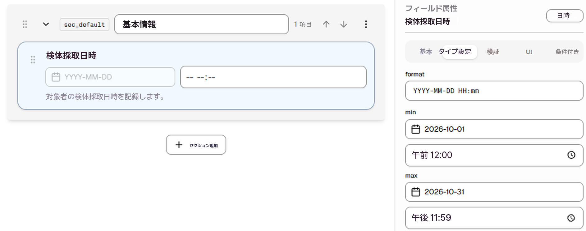
format — 日時の表示形式です。三つのうち一つを選択します。(下の「ニ.」を参照) キャプチャは YYYY-MM-DD HH:mm です。
min — 入力可能な最も早い日時です。日付欄(2026-10-01)と時刻欄(午前 12:00)をそれぞれ指定します。
max — 入力可能な最も遅い日時です。キャプチャは 2026-10-31 午後 11:59 で、10月の最後の瞬間まで許容します。
注意事項
必須確認 データ破損 · フォーム完了不可
- • ⛔ 一つのプロジェクトの中で format を混在させないでください。あるフォームは空白で、あるフォームは
Tで区切ると、抽出データを一度に扱うことが難しくなります。プロジェクト全体で一つに統一してください。 - • 時刻入力は午前/午後で表示されますが、format は24時間表記です。キャプチャの
午後 11:59は、formatHH:mmの基準では23:59です。選ぶときと表示されるときの表記が異なるため、記録者に事前に知らせてください。 - • min · max はキャンバスに表示されません。画面で確認できず、保存の段階でのみブロックされます。3.1
- • 区間の終わりを決めるときに、時刻を漏らさないでください。max の時刻欄を
午前 12:00(深夜0時) にすると、その日が丸ごと抜けます — キャプチャのように午後 11:59にしてはじめて、その日まで含まれます。
誤解しやすい動作
- • 秒(ss)が必要かどうかを先に判断してください。秒まで受け付けると記録の負担が増え、原資料に秒がなければ SDV の照合もできません。2.3
選択できる形式
| format | 表示例 | 使う場面 |
|---|---|---|
YYYY-MM-DD HH:mm | 2026-10-06 14:30 | 分単位で十分な一般的な記録 · 推奨 |
YYYY-MM-DD HH:mm:ss | 2026-10-06 14:30:05 | 秒まで必要な記録 (検体処理など) |
YYYY-MM-DDTHH:mm:ss | 2026-10-06T14:30:05 | ISO 8601 表記 — 外部システム連携時 |
3.3デフォルト値 (defaultValue)
概要
新しい入力を始めるときにあらかじめ入れておく日時です。このタイプは設定結果を編集画面で確認できないため、[プレビュー] に切り替える必要があります。
画面説明
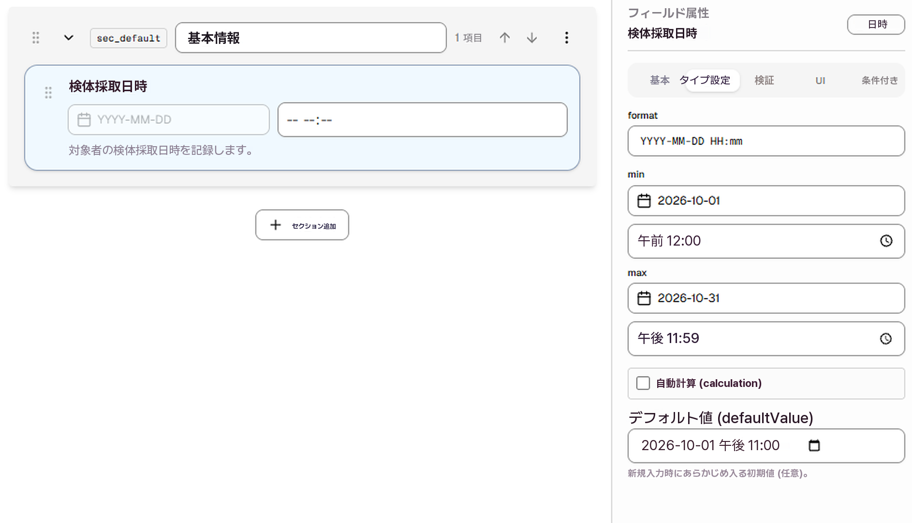
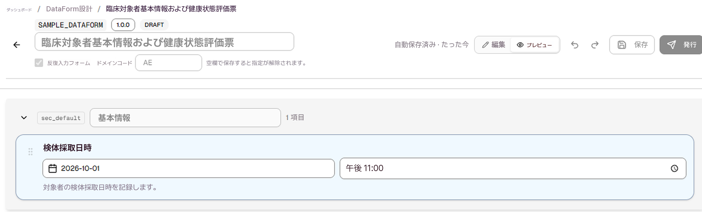
デフォルト値 (defaultValue) — 新規入力時にあらかじめ入る日時を指定します。(任意)
編集画面のキャンバスには依然として案内文だけが表示されます。設定が反映されていないのではなく、編集画面がデフォルト値を描画しないためです。
[プレビュー] — 上部でプレビューに切り替えます。
日付欄に 2026-10-01 が入っています。
時刻欄にも 午後 11:00 が入っています。両方の欄が埋まるかどうかをここで確認してください。
注意事項
必須確認 データ破損 · フォーム完了不可
- • ⛔ 測定日時の項目にはデフォルト値を指定しないでください。検体採取時刻のように一件ごとに異なるべき値にデフォルト値が入っていると、確認していない時刻がそのまま保存されます。時刻は一見もっともらしいため、誤った値に気付きにくくなります。
- • デフォルト値も min · max の区間3.2を満たす必要があります。区間から外れたデフォルト値は、保存の段階でブロックされます。
誤解しやすい動作
- • 編集画面だけを見て、設定されていないと判断しないでください。このタイプはデフォルト値が編集画面のキャンバスに表示されません — 必ず [プレビュー] で確認してください。
- • デフォルト値は、新しく作成する入力にのみ適用されます。すでに保存されたデータは変更されません。
検証タブ — 保存前の値チェック
- 4.1検証規則がない状態
- 4.2規則追加
- 4.3規則作成完了
4.1検証規則がない状態
概要
保存する前に日時が条件に合っているかをチェックする規則をまとめておくタブです。タイプ設定3章の min · max より、違反時に表示する文言を直接決めたい場合に使用します。日付タイプと同様に、値の範囲の規則のみを使用します。
画面説明
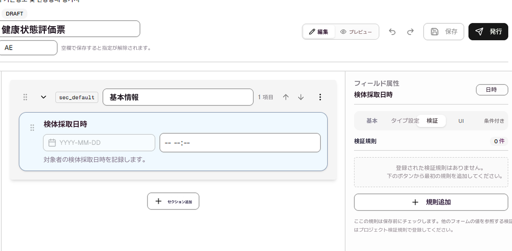
[+ 規則追加] — 最初の規則を作成します。選択した後の画面は 4.2 で説明します。
検証規則領域と、登録された規則数です。最初は 0 件 です。
規則がない場合は、「登録された検証規則はありません。下のボタンから最初の規則を追加してください。」という案内が表示されます。
下部の案内 — 「ここの規則は保存前にチェックします。他のフォームの値を参照する検証はプロジェクト検証規則で登録してください。」
注意事項
必須確認 データ破損 · フォーム完了不可
- • ⛔ 「投与時刻が採取時刻より後か」のような日時同士の比較は、ここでは作成できません。他のフォームの値を参照する検証は「プロジェクト検証規則」画面で登録してください。このタブは、同じフォームの中で完結するチェックだけを扱います。
誤解しやすい動作
- • タイプ設定の min · max だけで十分な場合が多くあります。同じ区間のチェックを二か所に重複して設定する必要はありません。3.2
- • 規則は複数作成でき、有効な規則をすべて満たした場合に保存されます。
4.2規則追加
概要
4.1 の[+ 規則追加]を選択すると、規則 1 ブロックが作成されます。日時フィールドで使用する規則の種類は値の範囲です — min · max 欄が日付と時刻を一緒に受け付ける入力で表示されます。
画面説明
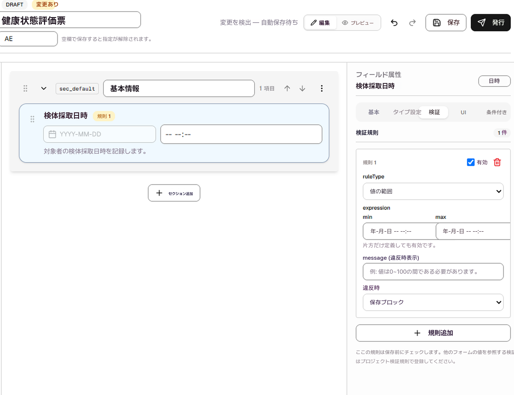
[+ 規則追加] — 規則をもう一つ作成します。(4.1 で選択したのと同じボタンです。)
「規則 1」ブロックが作成され、キャンバスの表示名の横に「規則 1」バッジが表示されます。
規則数が 1 件 に変わります。
有効チェックボックスと削除アイコン — 規則を削除せずに一時的に停止できます。
ruleType — 規則の種類です。このタイプでは値の範囲を使用します。
min — 区間の開始日時です。年-月-日 -- --:-- の形で入力します。
max — 区間の終了日時です。
薄い文字と「例: 値は0~100の間である必要があります。」は入力例であり、設定された値ではありません。画面の案内のとおり「片方だけ定義しても有効です。」
message (違反時表示) — 規則に違反したときに、ユーザーに表示する文言です。
違反時 — 保存ブロックまたは警告から選択します。
注意事項
必須確認 データ破損 · フォーム完了不可
- • message を空欄にすると、ユーザーはブロックされた理由が分かりません。必ず入力してください。
- • タイプ設定の区間制限3.2と一緒に適用されるため、互いに食い違うように指定すると、どの日時も保存できなくなります。
誤解しやすい動作
- • message の例の文言が数値用で表示されます。例にすぎないため、日時に合った文言を直接入力してください。4.3
- • ありえない日時は保存ブロック、まれだが起こりうる日時は警告に分けるのが実務上の基準です。
4.3規則作成完了
概要
4.2 の空欄を最後まで入力した状態です。この設定では、2026年10月から外れた日時を指定すると保存がブロックされ、指定した文言が表示されます。
画面説明
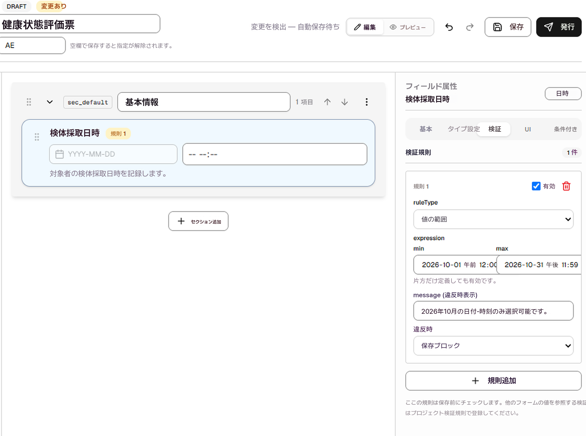
ruleType = 値の範囲 — 日時の前後の境界をチェックする規則です。
min = 2026-10-01 午前 12:00 — 区間の開始日時です。深夜0時から許容します。
max = 2026-10-31 午後 11:59 — 区間の終了日時です。その日の最後の1分まで許容します。
画面の案内 — 「片方だけ定義しても有効です。」 片方だけを指定しても、規則は正常に機能します。
message = 2026年10月の日付-時刻のみ選択可能です。 — 許容区間をそのまま記載し、ユーザーが何を直せばよいか分かるようにしました。
違反時 = 保存ブロック — 条件を満たすまで保存されません。
注意事項
必須確認 データ破損 · フォーム完了不可
- • 区間の両端で時刻を正確に指定してください。キャプチャのように、開始は午前 12:00(深夜0時)、終わりは午後 11:59 にしてはじめて、その期間がすべて含まれます。終わりを深夜0時にすると、最終日が丸ごと抜けます。3.2
- • message に許容区間をそのまま記載してください。日時は区間が画面に表示されないため、この文言が唯一の案内です。3.2
誤解しやすい動作
- • 値が長いため、入力欄にすべて表示されないことがあります。日付と時刻が一つの欄に入るためです — キャプチャの max 欄も末尾が切れて見えます。保存する前に欄をクリックして、値全体を確認してください。
- • タイプ設定3章と検証規則4章はすべて一緒に適用されます。どちらか一方でも食い違うと保存されません。
UIタブ — 画面配置と案内文
- 5.1UIタブの全体構成
- 5.2レイアウト幅
- 5.3読み取り専用 · 非表示
- 5.4placeholder · helpText
5.1全体構成
概要
値そのものではなく、画面にどう配置し、どう案内するかを決めるタブです。このタブの設定は、保存されるデータそのものを変更しません。ただし、非表示は画面上で隠すだけで必須集計からは除外されないため、使用する前に 5.3 を確認してください。
画面説明
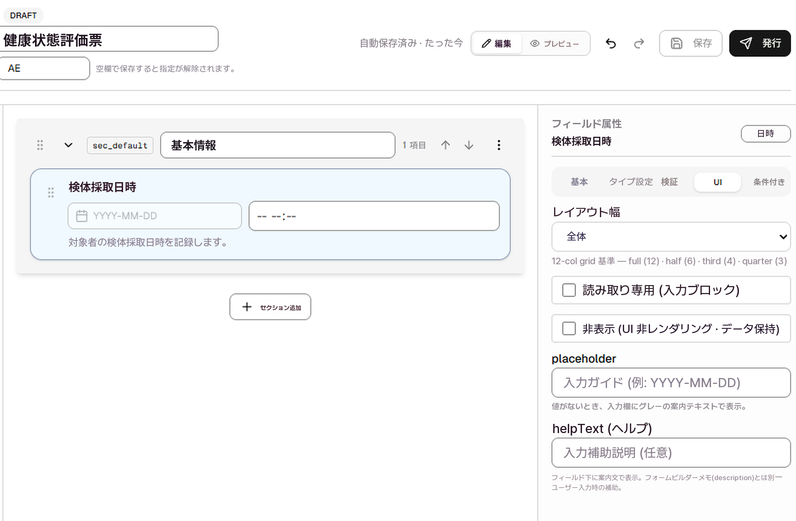
レイアウト幅 — 一行の中でこのフィールドが占める幅です。選択肢の意味は、すぐ下の案内「12-col grid 基準 — full (12) · half (6) · third (4) · quarter (3)」に記載されています。5.2
読み取り専用 (入力ブロック) — 表示はしますが、修正できないようにします。5.3
非表示 (UI 非レンダリング · データ保持) — 画面から隠します。5.3
placeholder — 値がないときに入力欄の中に表示されるグレーの案内です。5.4
helpText (ヘルプ) — フィールドの下に表示される案内文です。5.4
注意事項
必須確認 データ破損 · フォーム完了不可
- • ⛔ このタイプは幅を狭めると欄が切れます。入力欄が二つあるため、狭い幅では日付欄が
YY…のように切れて読めなくなります。全体を推奨します。5.2 - • 制限はすべて画面に表示されません。区間制限3.2 · 検証規則4章 · タイムゾーンの基準は、保存時にのみ機能するか、そもそも設定がないため、helpText で事前に知らせないと、ユーザーは理由も分からないままブロックされます。5.4
誤解しやすい動作
- • 入力欄に薄く表示される
入力ガイド (例: YYYY-MM-DD)·入力補助説明 (任意)は入力例であり、設定された値ではありません。
参考
- • デフォルト値はレイアウト幅 = 全体、読み取り専用 · 非表示は解除状態です。
5.2レイアウト幅
概要
一行を12列に分けた12-column grid 上で、このフィールドが占める幅を選択します。このタイプは幅の縮小に最も弱いタイプです — 一つのフィールドの中に入力欄が二つ入るためです。
画面説明
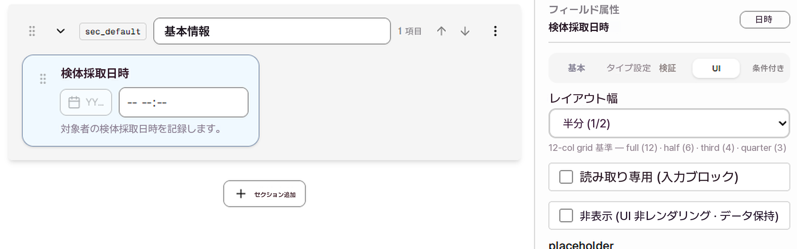
YY… に切れるレイアウト幅 — 選択リストから幅を指定します。例は半分 (1/2)です。
二つの欄が一緒に狭くなり、日付欄の案内文が YY… に切れます。ユーザーはどの形式で入力すればよいか分からなくなります。
注意事項
必須確認 データ破損 · フォーム完了不可
- • ⛔ 日時フィールドは全体幅を使用してください。キャプチャが示すとおり、半分になるだけでも案内文が切れます。日付タイプは欄が一つなので半分の幅でも問題ありませんが、このタイプは同じ幅に二つの欄を入れる必要があるため事情が異なります。
誤解しやすい動作
- • 幅を狭める必要がある場合は、placeholder を短く書いてください。ただし根本的な解決ではなく、案内は helpText に記載するほうが安全です。5.4
- • 幅を狭めると、次のフィールドが同じ行に配置されます。一行の合計が12を超えると、次の行に移ります。
参考
- • 画面幅が狭い端末では、設定に関係なく一行に一つずつ縦に配置されることがあります。
幅の選択肢
| 選択 | 占める列数 | 日時の場合 |
|---|---|---|
| 全体 | 12 | 二つの欄がどちらも完全に表示される — 推奨 |
| 半分 (1/2) | 6 | 日付欄の案内が切れる (キャプチャ) |
| 三分の一 (1/3) | 4 | 二つの欄とも判読しにくい |
| 四分の一 (1/4) | 3 | 事実上使用不可 |
5.3読み取り専用 · 非表示
概要
フィールドを修正できないようにしたり、表示されないようにしたりします。どちらも保存された日時はそのまま保持されます。
画面説明
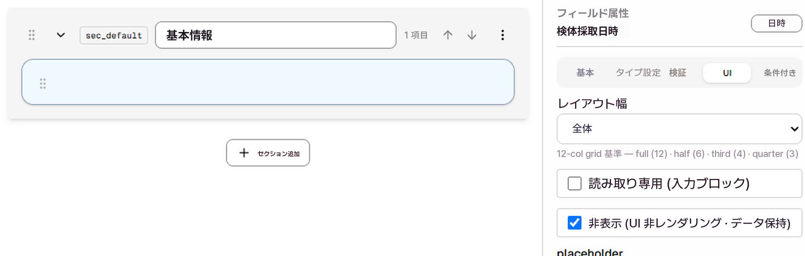
読み取り専用 (入力ブロック) — 日時は表示されますが、ユーザーは変更できません。(このキャプチャでは解除状態)
非表示 (UI 非レンダリング · データ保持) — 入力画面に表示しません。すでに保存された値は削除されません。
キャンバスからフィールドが消え、セクションが空に見えます。二つの欄が一緒に消えます。
注意事項
必須確認 データ破損 · フォーム完了不可
- • ⛔ 必須項目を非表示にしないでください。UIタブの非表示は画面上で隠すだけで、必須集計からは除外されません — ユーザーが入力できない項目が分母に残り、フォームを完了できなくなります。
- • 非表示はデータを削除しません。画面上で消えるだけなので、値を削除するにはフィールドを削除する必要があります。
誤解しやすい動作
- • 条件付きタブの非表示とは異なります。条件が合わずに非表示になったフィールドは、必須集計から除外されます6章。同じ「非表示」という表現を使いますが、検証での扱いが正反対なので、区別してください。
- • 読み取り専用と非表示は異なります。読み取り専用は「表示するが修正不可」、非表示は「表示しない」です。システムが記録した日時を確認させる必要がある場合は、読み取り専用を使用してください。
参考
- • 非表示にしても構造パネルにはそのまま残っています — 再度選択して設定を元に戻せます。
5.4placeholder · helpText
概要
ユーザーにどの日時を指定すべきかを知らせる二つの文言です。このタイプでは helpText が事実上唯一の案内手段です — 区間制限もタイムゾーンの基準も画面に表示されないためです。
画面説明
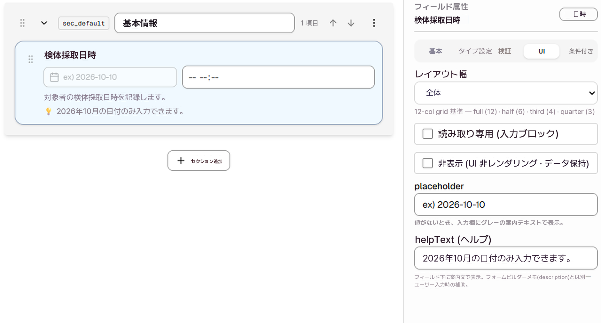
placeholder — 入力欄の中に表示する案内文を入力します。キャプチャは ex) 2026-10-10 です。
日付欄の中にグレーで表示されます。ユーザーが日付を選ぶと消えます。
⚠ 時刻欄は変わりません。placeholder は日付欄にのみ適用され、時刻欄は -- --:-- の案内をそのまま維持します。
helpText (ヘルプ) — フィールドの下に表示する案内文を入力します。キャプチャは 2026年10月の日付のみ入力できます で、許容区間を知らせています。
フィールドの下に電球アイコン(💡)とともに表示されます。日時を指定しても消えません。
注意事項
必須確認 データ破損 · フォーム完了不可
- • ⛔ 案内は helpText に記載してください。placeholder は時刻欄に適用されず、値を選ぶと消え、幅を狭めると切れます5.2。三つの弱点が重なるため、日時では案内手段として使用できません。
- • helpText に記載すべきこと — ① 許容区間3.2 ② タイムゾーンの基準(画面に設定がない · 3.1) ③ 午前/午後で選ぶが、表記は24時間であること3.2 ④ 分単位か秒単位か。
誤解しやすい動作
- • description と helpText は別々の項目です。画面の案内のとおり — helpText は「フォームビルダーメモ(description)とは別 — ユーザー入力時の補助」です。両方を入力すると、二行が一緒に表示されます。
条件付きタブ — 他の値に応じて表示する
- 6.1条件付き表示の有効化
- 6.2条件の設定
6.1条件付き表示の有効化
概要
他のフィールドの値に応じてこのフィールドを表示したり隠したりする機能です。「検体の有無 = はい」のときだけ採取日時を尋ねるような分岐に使用します — 該当しない被験者に埋められない二つの欄を表示しません。
画面説明
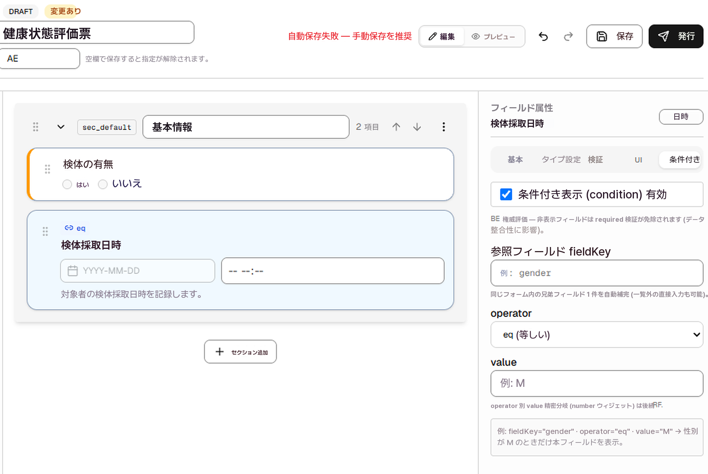
条件付き表示 (condition) 有効 — 選択すると、下の条件設定が表示されます。
キャンバスのフィールドの上に 🔗 eq バッジが表示され、条件が適用されたことを知らせます。
⚠ 画面の案内 — 「非表示フィールドは required 検証が免除されます (データ整合性に影響)。」 条件の判定はシステムが実行します。
参照フィールド fieldKey — 条件の基準となる、同じフォーム内の他のフィールドです。同じフォームの兄弟フィールドが自動補完され、一覧にない値を直接入力することもできます。
operator — 比較方法です。デフォルト値はeq (等しい)です。
value — 比較する値です。
下部の例 — fieldKey="gender" · operator="eq" · value="M" → 性別が M のときだけ本フィールドを表示。
注意事項
必須確認 データ破損 · フォーム完了不可
- • 条件を設定すると、必須検証が免除される場合があります。条件が合わずに非表示になっている間は、そのフィールドが必須であっても空の状態でフォームが完了します。これは不具合ではなく意図された動作です。
誤解しやすい動作
- • 「実施した場合にのみ日時を尋ねる」典型的な使い方です。実施していない被験者に二つの欄を空けたままにさせたり、任意の時刻を入れさせたりすることを防げます。2.2 · 2.4
- • キャプチャ上部の「自動保存失敗 — 手動保存を推奨」は、自動保存が一時的に失敗したときに表示される案内です。この場合は [保存] を押して、直接保存してください。
参考
- • 条件を有効にして参照フィールドを空欄にすると、条件は成立しません。必ず②~④をすべて入力してください。6.2
6.2条件の設定
概要
6.1 で有効にした条件を最後まで入力した状態です。この設定では、「検体の有無」フィールドの値が 1(はい) のときだけ、この日時フィールドが入力画面に表示されます。
画面説明
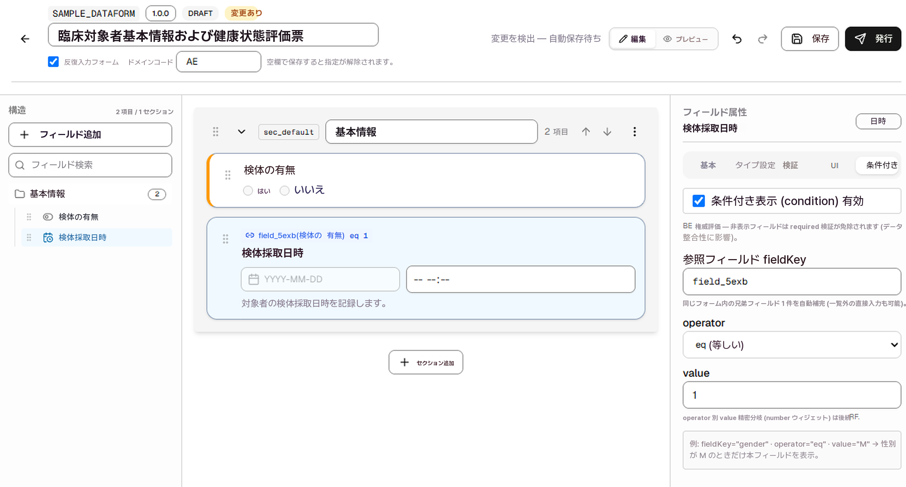
検体の有無 が 1 のときだけ表示されるように設定した状態参照フィールド fieldKey = field_5exb — 同じフォームの「検体の有無」フィールドを指します。
operator = eq (等しい)
value = 1 — 画面に表示される「はい」ではなく、その選択肢に保存される値を入力します。
①~③をすべて入力した結果 — キャンバスのバッジが 🔗 field_5exb(検体の有無) eq 1 と具体的に表示されます。
参照先の「検体の有無」フィールドは同じフォーム内にある必要があり、構造ツリーで確認できます。
下部の例 — fieldKey="gender" · operator="eq" · value="M" → 性別が M のときだけ本フィールドを表示。
注意事項
必須確認 データ破損 · フォーム完了不可
- • ⛔ value には画面の文言ではなく保存値を入力します。キャプチャでは参照フィールドは はい / いいえ と表示されていますが、実際の保存値は
1です。「はい」と入力すると条件がいつまでも成立せず、このフィールドは最後まで表示されません。 - • 日時フィールドを条件の基準にすることはお勧めしません。
eqは分単位まで完全に一致する場合にのみ成立するため、事実上一致しません。基準として使う場合は、「実施の有無」のような選択フィールドを別に設けてください。 - • 参照フィールドの fieldKey を変更または削除すると、条件が壊れます。条件は表示名ではなく fieldKey で紐付けられます。2.1
参考
- • 条件を使用するとフォームが短くなり、不要な入力が減ります。ただし、条件が互いに衝突すると最後まで表示されないフィールドが生じるため、設定後にプレビューで必ず確認してください。
付録
- 7.1設定項目一覧
7.1日時フィールドの設定項目一覧
タブ別の設定項目
| タブ | 項目 | 何を決めるか | 本文 |
|---|---|---|---|
| 基本 | fieldKey | 値が保存される実際のキー (保存後の変更禁止) | 2.1 |
| label (表示名) | 画面に表示される項目名 | 2.1 | |
| description (ヘルプ) | 表示名の下の補足説明 — どの時点の時刻か | 2.1 | |
| 必須入力 | 必ず入力する必要があるか (二つの欄とも埋める必要がある) | 2.2 | |
| SDV検証対象 | CRA原資料照合の対象か · 検証必須かどうか | 2.3 | |
| AE意味ロール | 有害事象フォームでこのフィールドが意味するもの | ※ | |
| 未測定宣言を許可 | 「日時不明」を値として残せるか · 表示ラベル · 表示灯 | 2.4 | |
| タイプ設定 | format | 表示形式 3種 — HH:mm / HH:mm:ss / ISO(T) | 3.2 |
| min · max | 入力可能な日時の区間 — それぞれ日付欄 + 時刻欄 | 3.2 | |
| デフォルト値 (defaultValue) | あらかじめ入れておく日時 — プレビューでのみ確認できる | 3.3 | |
| 自動計算 | このタイプでは使用しない | 3.1 | |
| 検証 | ruleType | 規則の種類 — 値の範囲のみ使用 | 4.2 |
| expression (min · max) | 開始 · 終了日時 (片方だけの指定も可能) | 4.3 | |
| message | 違反時に表示する文言 — 許容区間をそのまま | 4.3 | |
| 違反時 · 有効 | 保存ブロック / 警告 · 規則の有効 · 無効 | 4.2 | |
| UI | レイアウト幅 | 12-col grid 上の幅 — 全体を推奨(欄が二つのため切れる) | 5.2 |
| 読み取り専用 | 表示するが修正できないように | 5.3 | |
| 非表示 | 画面に表示しない (保存値は保持 · 必須集計には残る) | 5.3 | |
| placeholder · helpText | placeholder は日付欄にのみ適用 — 案内は helpText に | 5.4 | |
| 条件付き | 条件の有効化 | 条件付き表示を使用するかどうか (必須検証の免除) | 6.1 |
| 参照フィールド fieldKey | 条件の基準となる、同じフォームのフィールド | 6.2 | |
| operator · value | 比較方法と比較する値 (保存値を入力) | 6.2 |
必ず覚えておくこと
必須確認 データ破損 · フォーム完了不可
- • レイアウト幅は全体を使用してください。一つのフィールドに入力欄が二つあるため、半分になるだけでも日付欄の案内が
YY…に切れます。5.2 - • 区間の終わりで時刻を漏らさないでください。max を深夜0時にすると最終日が丸ごと抜けます —
午後 11:59にしてください。3.2 · 4.3 - • 分からない時刻を 00:00 や 12:00 で埋めないでください。実際の記録と区別できません — 未測定宣言を使用してください。2.4
- • 案内は helpText に記載してください。placeholder は時刻欄に適用されず、幅を狭めると切れます。5.4
- • 測定日時にデフォルト値を設定しないでください。確認していない時刻が、もっともらしい形で保存されます。3.3
誤解しやすい動作
- • 時刻入力は午前/午後ですが、format は24時間表記です。
午後 11:59=23:59。3.2 - • デフォルト値は編集画面に表示されません。[プレビュー] でのみ確認できます。3.3
- • タイムゾーンの設定はありません。多国間試験であれば、基準のタイムゾーンをプロトコルで定め、helpText で案内してください。3.1 · 5.4
この文書で扱っていないもの
※ AE意味ロール — 基本タブにありますが、設定手順のキャプチャがないため、別の節を設けていません。有害事象(AE)フォームを使用するプロジェクトでのみ指定します。詳しい使い方は、AE 関連の文書を参照してください。
同意日前の入力禁止 — このタイプには項目自体がありません。日付(DATE)タイプ専用のため、同意日ゲートが必要な項目は日付タイプで設計するか、検証規則の値の範囲で下限を設けてください。1.1
自動計算 (calculation) — タイプ設定タブに項目が表示されますが、このタイプでは使用しません。他のフィールドの値から数値を算出する機能のため、数値タイプで使用してください。3.1
値の範囲以外の検証規則の種類 — このタイプで使用するのは値の範囲一つです。他の日時と比較する検証(例: 投与時刻が採取時刻より後か)は「プロジェクト検証規則」画面で登録します。4.1